# install.packages("tidyverse") # 最初の1回だけ読み込む。あとはコメントアウト
library(tidyverse) # tidyverseパッケージの読み込み第8回 決算書の読み方
はじめに
プログラミング言語Rを使って、「企業と会計」第8回講義の中で紹介したグラフの作り方を説明します。 ここでは、立命館大学の図書館のデータベース「日経NEEDS」から外食産業に属する7企業のデータを用いて、Rで様々な分析を行います。
準備
Rでは様々な便利な機能を追加してくれるパッケージを使うことができます。 ここでは、R神話の一人であるHadley Wickham氏が開発したtidyverseというパッケージを使います。 tidyverseには、データの読み込みや加工、グラフの作成などに便利な関数が含まれています。
データの取得
売上高や広告宣伝費といった財務データや株価は、立命館大学が契約している日経メディアマーケティング社のデータベース「日経NEEDS」から取得することができます。 図書館のウェブサイトの「データベース」タグを選択し、検索窓に「NEEDS」と入力して検索ボタンを押せば、日経NEEDSへのリンクが表示されます。 日経NEEDSの「一般企業財務」の項目を選べば、財務データを取得することができるページに移動できます。
データの読み込み
日経NEEDSから取得したデータは、csvファイルとしてダウンロードすることができます。 csvファイルとは、データをカンマで区切ったテキストファイルのことで、最もシンプルなデータ形式なので、プログラミング言語などでデータを扱う際によく使われます。 ここではcsvファイルを読み込むための関数としてread_csv()関数を使います。これもtidyverseパッケージの1つです。
df <- read_csv("gaishoku_2023.csv") # csvファイルの読み込み最初のdfは、読み込んだデータを格納するための変数名で、自由に名前をつけることができます。ここではデータフレームの略称であるdfとしました。 次の<-は、代入演算子と呼ばれるもので、右辺のデータを左辺の変数に代入するために使います。他の言語では=を使うことが多いですが、Rでは矢印である<-を使います。 read.csv()関数の引数には、読み込むファイルの名前を指定します。ここでは、gaishoku_2023.csvというファイルを読み込んでいます。 これで、dfの中にgaishoku_2023.csvのデータが格納されました。
中身を確認するため、先頭の5行を表示させるには、head()関数を使います。
head(df)# A tibble: 6 × 34
日経会社コード 企業名称 決算期 決算種別 連結基準 決算月数 流動資産 固定資産
<chr> <chr> <chr> <dbl> <dbl> <dbl> <dbl> <dbl>
1 0007675 吉野家HD 2007/02 10 1 12 38586 61225
2 0007675 吉野家HD 2008/02 10 1 12 37576 63280
3 0007675 吉野家HD 2009/02 10 1 12 32198 80208
4 0007675 吉野家HD 2010/02 10 1 12 30003 75198
5 0007675 吉野家HD 2011/02 10 1 12 26358 70730
6 0007675 吉野家HD 2012/02 10 1 12 26805 67565
# ℹ 26 more variables: のれん <dbl>, 資産合計 <dbl>, 流動負債 <dbl>,
# 固定負債 <dbl>, 負債合計 <dbl>, 株主資本 <dbl>, 資本金 <dbl>,
# 資本剰余金 <dbl>, 利益剰余金 <dbl>, 自己株式 <dbl>,
# 累積その他の包括利益 <dbl>, 純資産合計 <dbl>, 売上高 <dbl>, 売上原価 <dbl>,
# 販管費 <dbl>, 営業利益 <dbl>, 経常利益 <dbl>, 法人税等 <dbl>,
# 法人税等調整額 <dbl>, 当期純利益 <dbl>, 親会社株主当期純利益 <dbl>,
# 広告宣伝費 <dbl>, 人件費等 <dbl>, 研究開発費 <dbl>, 期末従業員数 <dbl>, …データの構造を見るには、glimpse()を使います。これもtidyverseの1つです。
glimpse(df)Rows: 110
Columns: 34
$ 日経会社コード <chr> "0007675", "0007675", "0007675", "0007675", "0007…
$ 企業名称 <chr> "吉野家HD", "吉野家HD", "吉野家HD", "吉野家HD", "…
$ 決算期 <chr> "2007/02", "2008/02", "2009/02", "2010/02", "2011…
$ 決算種別 <dbl> 10, 10, 10, 10, 10, 10, 10, 10, 10, 10, 10, 10, 1…
$ 連結基準 <dbl> 1, 1, 1, 1, 1, 1, 1, 1, 1, 1, 1, 1, 1, 1, 1, 1, 1…
$ 決算月数 <dbl> 12, 12, 12, 12, 12, 12, 12, 12, 12, 12, 12, 12, 1…
$ 流動資産 <dbl> 38586, 37576, 32198, 30003, 26358, 26805, 24242, …
$ 固定資産 <dbl> 61225, 63280, 80208, 75198, 70730, 67565, 67095, …
$ のれん <dbl> 2617, 723, 3994, 636, 267, 214, 1685, 1471, 1242,…
$ 資産合計 <dbl> 99811, 100856, 112406, 105202, 97088, 94371, 9133…
$ 流動負債 <dbl> 16581, 19026, 25260, 26298, 34573, 34032, 31115, …
$ 固定負債 <dbl> 7895, 6735, 14468, 17705, 16345, 14754, 16832, 13…
$ 負債合計 <dbl> 24477, 25762, 39728, 44004, 50918, 48787, 47948, …
$ 株主資本 <dbl> 71244, 70549, 69432, 59132, 44183, 46005, 44421, …
$ 資本金 <dbl> 10265, 10265, 10265, 10265, 10265, 10265, 10265, …
$ 資本剰余金 <dbl> 11141, 11153, 11153, 11153, 11153, 11139, 11139, …
$ 利益剰余金 <dbl> 55962, 55076, 53959, 43659, 42780, 42689, 41105, …
$ 自己株式 <dbl> -6124, -5945, -5946, -5946, -20015, -18089, -1808…
$ 累積その他の包括利益 <dbl> -1281, -990, -1605, -1605, -1820, -1891, -1706, -…
$ 純資産合計 <dbl> 75334, 75094, 72678, 61197, 46169, 45584, 43390, …
$ 売上高 <dbl> 135519, 155779, 174249, 179602, 171314, 165883, 1…
$ 売上原価 <dbl> 51724, 60950, 66356, 67469, 60171, 56525, 58985, …
$ 販管費 <dbl> 80103, 88606, 104311, 113028, 106027, 104556, 103…
$ 営業利益 <dbl> 3691, 6222, 3582, -895, 5116, 4801, 1877, 2179, 3…
$ 経常利益 <dbl> 4216, 7372, 4340, -476, 5509, 5311, 2460, 3270, 3…
$ 法人税等 <dbl> 1931, 3472, 3568, 1685, 1075, 1781, 1099, 1774, 1…
$ 法人税等調整額 <dbl> 163, -363, -176, -1362, 1548, 156, 216, -228, 190…
$ 当期純利益 <dbl> NA, NA, NA, NA, NA, 1195, -326, 622, 839, 825, 12…
$ 親会社株主当期純利益 <dbl> 2096, 186, 208, -8941, 382, 1310, -364, 698, 941,…
$ 広告宣伝費 <dbl> 2783, 2894, 3919, 3999, 3099, 3604, 3159, 3460, 3…
$ 人件費等 <dbl> 40706, 40301, 46246, 48965, 46744, 46024, 45877, …
$ 研究開発費 <dbl> NA, NA, NA, NA, NA, NA, NA, NA, NA, NA, NA, NA, N…
$ 期末従業員数 <dbl> 2531, 2929, 3459, 3830, 3448, 3330, 3339, 3201, 3…
$ 海外売上高 <dbl> NA, NA, NA, NA, NA, NA, NA, NA, NA, NA, NA, NA, N…出力された結果の最初の2行をみると、行(rows)が110，列(columns)が34あることがわかります。 行は観測値、列は売上高や広告宣伝費といった変数を表しています。
このデータを使って分析したりグラフを作成したりするのですが、その前に以下の準備が必要になります。 データ分析をするためにデータの形を整えることを前処理(preprocessing)と呼びます。
前処理
ここでは、
- 決算期が文字列
chrとして読み込まれているので、日付dateに変換する - 期間を揃えるため、決算月数が12ヶ月のデータのみを抽出する
- 欠損値を0に置き換える
という前処理を行います。 まずは1番目の決算期の処理から始めます。
決算期の処理
table()関数を使って決算期の種類を確認してみます。 データフレームdfの中の特定の列のデータを取り出すには、df$列名のように$を使います。 ここではdf$決算期となります。
table(df$決算期)
2007/02 2007/03 2007/08 2007/10 2008/02 2008/03 2008/08 2008/10 2009/02 2009/03
1 4 1 1 1 4 1 1 1 4
2009/08 2009/10 2010/02 2010/03 2010/08 2010/10 2011/02 2011/03 2011/08 2011/10
1 1 1 4 1 1 1 4 1 1
2012/02 2012/03 2012/08 2012/10 2013/02 2013/03 2013/08 2013/10 2014/02 2014/03
1 4 1 1 1 4 1 1 1 4
2014/08 2014/10 2015/02 2015/03 2015/08 2015/10 2016/02 2016/03 2016/08 2016/10
1 1 1 4 1 1 1 4 1 1
2017/02 2017/03 2017/08 2017/10 2018/02 2018/03 2018/08 2018/10 2019/02 2019/03
1 4 1 1 1 4 1 1 1 4
2019/08 2019/10 2020/02 2020/03 2020/08 2020/10 2021/02 2021/03 2021/08 2021/10
1 1 1 4 1 1 1 4 1 1
2022/02 2022/03
1 4 すると、8月決算、10月決算、2月決算、3月決算の会社があることが分かりました。 ふつうは異なる決算期のデータを比較するためにいろいろ処理が必要となりますが、ここでは単純に年度データだけを取り出します。 文字列から特定の部分を取り出すには、substr()関数を使います。 ここでは、最初の4文字を取り出すので、
df$年度 <- substr(df$決算期, 1, 4)とします。df$年度とすることで、dfの中に年度という列が追加されます。 この年度データはまだ文字列なので、年数として順番をもつファクター型に変換します(今はそんなもんだと思っておいてください)。
df$年度 <- factor(df$年度, levels=c(2007:2022),ordered=TRUE )またデータを確認します。
glimpse(df)Rows: 110
Columns: 35
$ 日経会社コード <chr> "0007675", "0007675", "0007675", "0007675", "0007…
$ 企業名称 <chr> "吉野家HD", "吉野家HD", "吉野家HD", "吉野家HD", "…
$ 決算期 <chr> "2007/02", "2008/02", "2009/02", "2010/02", "2011…
$ 決算種別 <dbl> 10, 10, 10, 10, 10, 10, 10, 10, 10, 10, 10, 10, 1…
$ 連結基準 <dbl> 1, 1, 1, 1, 1, 1, 1, 1, 1, 1, 1, 1, 1, 1, 1, 1, 1…
$ 決算月数 <dbl> 12, 12, 12, 12, 12, 12, 12, 12, 12, 12, 12, 12, 1…
$ 流動資産 <dbl> 38586, 37576, 32198, 30003, 26358, 26805, 24242, …
$ 固定資産 <dbl> 61225, 63280, 80208, 75198, 70730, 67565, 67095, …
$ のれん <dbl> 2617, 723, 3994, 636, 267, 214, 1685, 1471, 1242,…
$ 資産合計 <dbl> 99811, 100856, 112406, 105202, 97088, 94371, 9133…
$ 流動負債 <dbl> 16581, 19026, 25260, 26298, 34573, 34032, 31115, …
$ 固定負債 <dbl> 7895, 6735, 14468, 17705, 16345, 14754, 16832, 13…
$ 負債合計 <dbl> 24477, 25762, 39728, 44004, 50918, 48787, 47948, …
$ 株主資本 <dbl> 71244, 70549, 69432, 59132, 44183, 46005, 44421, …
$ 資本金 <dbl> 10265, 10265, 10265, 10265, 10265, 10265, 10265, …
$ 資本剰余金 <dbl> 11141, 11153, 11153, 11153, 11153, 11139, 11139, …
$ 利益剰余金 <dbl> 55962, 55076, 53959, 43659, 42780, 42689, 41105, …
$ 自己株式 <dbl> -6124, -5945, -5946, -5946, -20015, -18089, -1808…
$ 累積その他の包括利益 <dbl> -1281, -990, -1605, -1605, -1820, -1891, -1706, -…
$ 純資産合計 <dbl> 75334, 75094, 72678, 61197, 46169, 45584, 43390, …
$ 売上高 <dbl> 135519, 155779, 174249, 179602, 171314, 165883, 1…
$ 売上原価 <dbl> 51724, 60950, 66356, 67469, 60171, 56525, 58985, …
$ 販管費 <dbl> 80103, 88606, 104311, 113028, 106027, 104556, 103…
$ 営業利益 <dbl> 3691, 6222, 3582, -895, 5116, 4801, 1877, 2179, 3…
$ 経常利益 <dbl> 4216, 7372, 4340, -476, 5509, 5311, 2460, 3270, 3…
$ 法人税等 <dbl> 1931, 3472, 3568, 1685, 1075, 1781, 1099, 1774, 1…
$ 法人税等調整額 <dbl> 163, -363, -176, -1362, 1548, 156, 216, -228, 190…
$ 当期純利益 <dbl> NA, NA, NA, NA, NA, 1195, -326, 622, 839, 825, 12…
$ 親会社株主当期純利益 <dbl> 2096, 186, 208, -8941, 382, 1310, -364, 698, 941,…
$ 広告宣伝費 <dbl> 2783, 2894, 3919, 3999, 3099, 3604, 3159, 3460, 3…
$ 人件費等 <dbl> 40706, 40301, 46246, 48965, 46744, 46024, 45877, …
$ 研究開発費 <dbl> NA, NA, NA, NA, NA, NA, NA, NA, NA, NA, NA, NA, N…
$ 期末従業員数 <dbl> 2531, 2929, 3459, 3830, 3448, 3330, 3339, 3201, 3…
$ 海外売上高 <dbl> NA, NA, NA, NA, NA, NA, NA, NA, NA, NA, NA, NA, N…
$ 年度 <ord> 2007, 2008, 2009, 2010, 2011, 2012, 2013, 2014, 2…最後の年度の型が<ord>という順序つきファクターになりました。
決算月数
決算期の変更などで会計期間が1年未満となっている企業のデータが含まれていると、データの比較ができないため、 決算月数が12ヶ月のデータのみを抽出します。 ある条件を満たすデータを抽出したいときは、filter()関数を使います。
df <- df %>% filter(決算月数 == 12)%>%はパイプ演算子と呼ばれるもので、左辺のデータを右辺の関数に渡すという意味です。 ここでは、dfをfilter()関数の第1引数として渡しているので、filter(df, 決算月数 == 12)と同じ意味です。
欠損値
研究開発費や広告宣伝費などは、企業によっては金額が少ないため損益計算書の項目として登場せず、その他にまとめられているものもあるため、 このデータでも欠損値を意味するNAとなっているところがあります。 欠損値はそのままでは扱えないので、0に置き換えます。
df[is.na(df)] <- 0これは、dfというデータフレームのうち、is.na()で欠損値かどうかを判定し、欠損値であるデータに0を代入する、という意味です。 df[条件]とすることで、条件を満たすデータだけ取り出して、そこに0を代入しています。
新しい変数の作成
前処理が終わったので、分析や作図に使う変数を作成していきます。 ここでは、流動比率、ROE、売上高利益率、総資産回転率、財務レバレッジ、最後に広告宣伝費率という変数を作成してみます。 新しい変数を作成するには、mutate()関数を使います。これもtidyverseの1つです。 変数によっては前期末の値を使うため、lag()関数を使います。 そしてlag()変数が1つ前の値を返すので、他企業のデータを参照しないように、group_by()関数で企業ごとにグループ化します。 前処理や変数作成が終わったので、df_finalという別の変数に代入し、いつでも元のデータdfに戻せるようにします。
df_final <- df %>%
dplyr::group_by(日経会社コード) %>% # 企業ごとに
dplyr::mutate( # 以下の変数を作成
流動比率 = 流動資産 / 流動負債, # 流動比率
株主資本 = 資本金 + 資本剰余金 + 利益剰余金 + 自己株式, # 株主資本
ROE = 親会社株主当期純利益 / lag(株主資本), # ROE
売上高利益率 = 親会社株主当期純利益 / 売上高, # 売上高親利益率
総資産回転率 = 売上高 / lag(資産合計), # 総資産回転率
財務レバレッジ = lag(資産合計) / lag(株主資本), # 財務レバレッジ
広告宣伝費率 = 広告宣伝費 / 売上高, # 広告宣伝費売上高比率
) %>%
ungroup() %>% # グループ化を解除
filter(年度 >= 2008) %>%
select(企業名称, 年度, 売上高, 流動比率, ROE, 売上高利益率, 総資産回転率, 財務レバレッジ, 広告宣伝費率) # 必要なものだけ残すデータがどうなったか確認してみます。
glimpse(df_final)Rows: 103
Columns: 9
$ 企業名称 <chr> "吉野家HD", "吉野家HD", "吉野家HD", "吉野家HD", "吉野家…
$ 年度 <ord> 2008, 2009, 2010, 2011, 2012, 2013, 2014, 2015, 2016, 2…
$ 売上高 <dbl> 155779, 174249, 179602, 171314, 165883, 164599, 173418,…
$ 流動比率 <dbl> 1.9749816, 1.2746635, 1.1408852, 0.7623868, 0.7876410, …
$ ROE <dbl> 0.002610746, 0.002948305, -0.128775331, 0.006460232, 0.…
$ 売上高利益率 <dbl> 0.001193999, 0.001193694, -0.049782296, 0.002229824, 0.…
$ 総資産回転率 <dbl> 1.560740, 1.727701, 1.597797, 1.628429, 1.708584, 1.744…
$ 財務レバレッジ <dbl> 1.400974, 1.429588, 1.618960, 1.779134, 2.197406, 2.051…
$ 広告宣伝費率 <dbl> 0.01857760, 0.02249080, 0.02226590, 0.01808959, 0.02172…すべての準備が終わったので、作図してみましょう。 ここでは、tidyverseのggplot2パッケージのggplot()関数を使います。 ggplot()関数は、主に3つの引数を取ります。
data()で、作図に使うデータが入ったデータフレーム(data.frame)を指定aes()で、グラフのx軸、あるいはx軸とy軸に使う変数を指定します。geom_で始まる関数で、作図の種類を指定します。
ggplot2では、これらの要素を+でつなげることで、レイヤーを重ねるように、グラフに要素を加えていきます。
売上高の推移
まずは、売上高のグラフを作成します。 企業ごとに折れ線グラフを書きたいので、group = 企業名称を加えています。
ggplot(data = df_final) + aes(x = 年度, y = 売上高, group = 企業名称) + geom_line()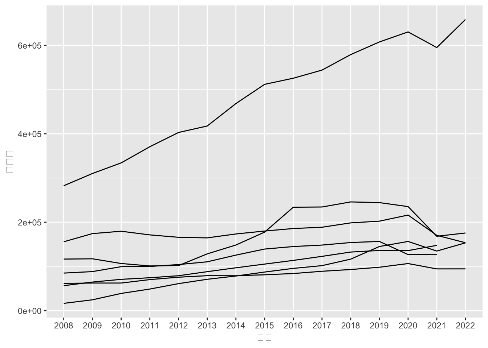
見づらいので、色分けして、散布図も重ねます。 ついでに売上高の数値が指数表記で見づらいので、百万円単位から1億円単位に変換するために、売上高を100で割ります。
いろいろ加えていくと、ソースコードが長くなるので、次のように書いて、要素を上から重ねていきます。
g <- ggplot(data = df_final) +aes(x = 年度, y = 売上高/100, group = 企業名称, color = 企業名称)
g <- g + geom_line() + geom_point() # 折れ線グラフと散布図
print(g)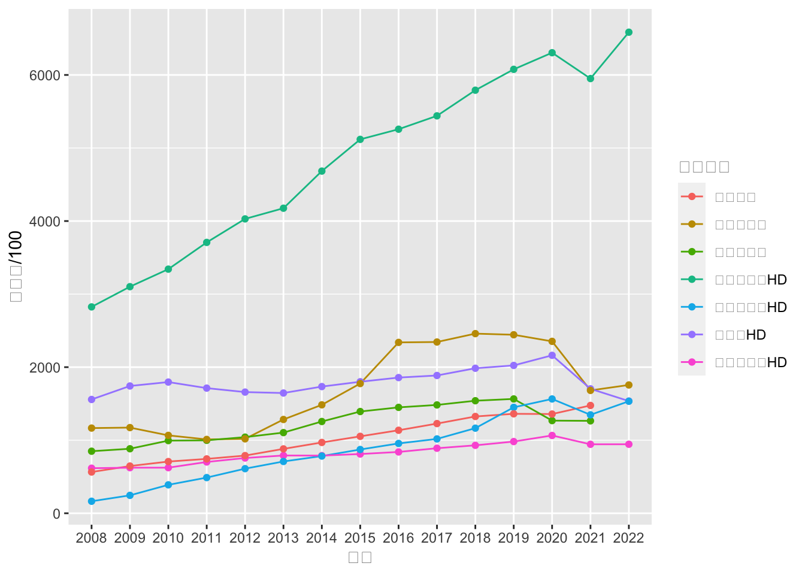
シンプルなグラフにしたいので、theme_bwを加えて、背景を白にします。 ついでに、X軸とY軸のラベルも追加します。
g <- g + xlab("年度") + ylab("売上高 (億円)") + theme_bw()
print(g)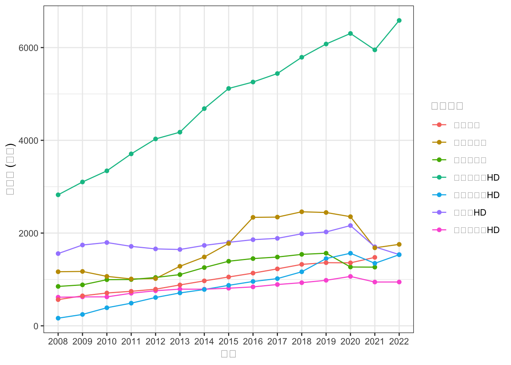
Macの人は文字化けしているかもしれません。その場合はフォントを指定してあげます。 ここではMacに入っている「ヒラギノフォント」を指定しました。ついでにフォントの大きさも変えます。
g <- g + theme_bw(base_family = "HiraKakuProN-W3") + theme(axis.text = element_text(size = 8))
print(g)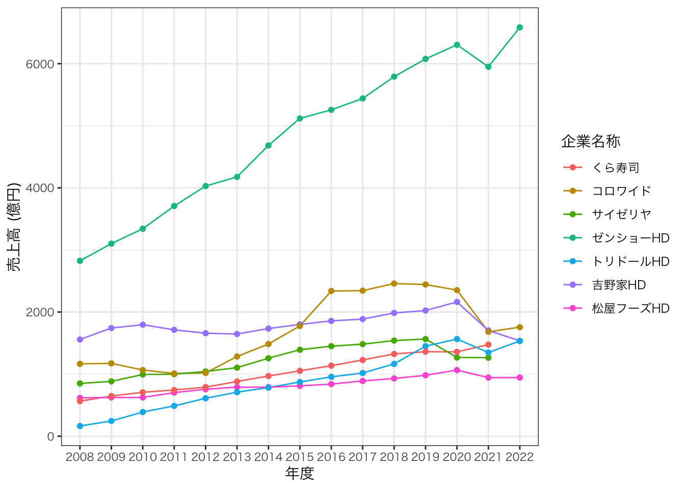
何度もこれを書くのは面倒なので、mystyleという名前でリストとして保存しておきます。
mystyle <- list(
theme_bw(base_family = "HiraKakuProN-W3"),
theme(
axis.text = element_text(size = 8)
)
)流動比率
次は流動比率のグラフを作成してみましょう。
g <- ggplot(df_final) + aes(x = 年度, y = 流動比率, group = 企業名称, color = 企業名称)
g <- g + geom_point() + geom_path() # 折れ線グラフとポイント
g <- g + xlab("年度") + ylab("流動比率 (%)") + mystyle
print(g)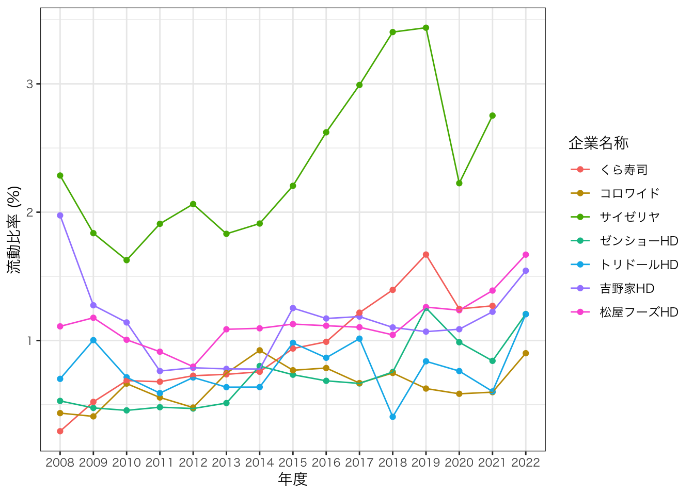
ROE
つぎはROEのグラフを作成してみましょう。
g <- ggplot(df_final) + aes(x = 年度, y = ROE, group = 企業名称, color = 企業名称) # グラフの基礎
g <- g + geom_point() + geom_path() # 折れ線グラフとポイント
g <- g + xlab("年度") + ylab("ROE") + mystyle # ラベル作成
print(g)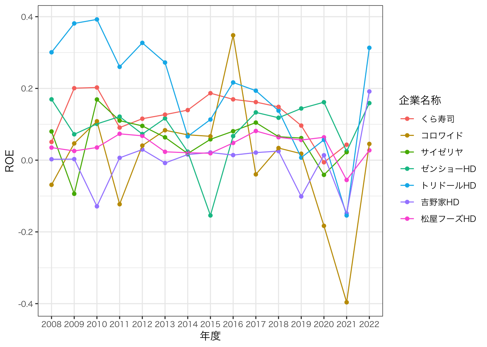
できました。ここで、y =のところと、ylab()のところを書き換えているだけで、あとは同じであることに気づきましたか？ プログラミングでは、同じ事を2回以上書いているな、と思ったときは、関数を作って、それを呼び出すようにして、同じ事を2回書かないようにします。
ここでは、myplotという関数を作って、それを呼び出すようにします。
myplot <- function(yvar){
# yvarの評価
yvar_evaluated <- enquo(yvar)
g <- ggplot(df_final) + aes(x = 年度, y = !!yvar_evaluated, group = 企業名称, color = 企業名称) # グラフの基礎
g <- g + geom_point() + geom_path() # 折れ線グラフとポイント
g <- g + xlab("年度") + ylab(deparse(yvar_evaluated)) + mystyle #
}これで、myplot()関数を呼び出すだけで、グラフが作成できます。
g1 <- myplot(売上高利益率)
print(g1)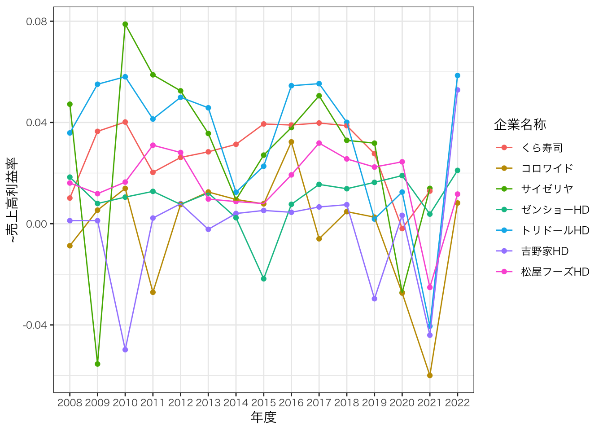
g2 <- myplot(総資産回転率)
print(g2)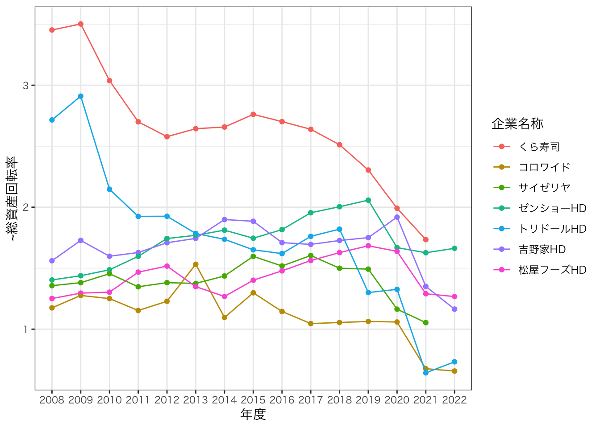
g3 <- myplot(財務レバレッジ)
print(g3)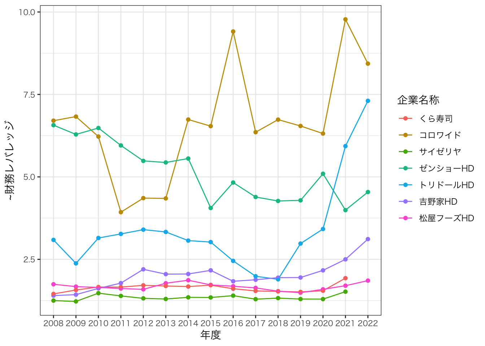
これをpatchworkパッケージを使って並べてみます。
library(patchwork)
g1 / g2 / g3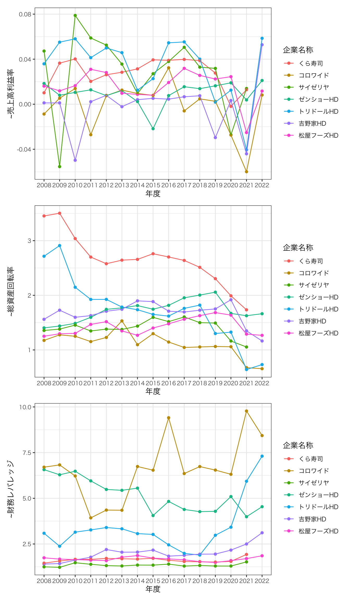
まとめ
いろいろ説明しながらいろいろ書いたので、たかがグラフを作るためにこんなに長いコードを書かないといけないのか、と思われるかもしれません。 しかし、このコードを書いておくと、あとはデータを更新するだけで、グラフが自動的に更新されるようになります。
最後に、必要最小限のことだけでグラフを作成するコードを書いておきます。
library(tidyverse) # tidyverseパッケージの読み込み
df <- read_csv("gaishoku_2023.csv") %>%
filter(決算月数 == 12) %>% # 決算月数12のみ
mutate(年度 = factor(substr(決算期, 1, 4), levels = as.character(2007:2022), ordered = TRUE)) %>% # 年度
mutate_all(~replace_na(., 0))前処理まで一気に終わらせましたので、次は変数作成です。
df_final <- df %>%
dplyr::group_by(日経会社コード) %>% # 企業ごとに
dplyr::mutate( # 以下の変数を作成
流動比率 = 流動資産 / 流動負債, # 流動比率
株主資本 = 資本金 + 資本剰余金 + 利益剰余金 + 自己株式, # 株主資本
ROE = 親会社株主当期純利益 / lag(株主資本), # ROE
売上高利益率 = 親会社株主当期純利益 / 売上高, # 売上高親利益率
総資産回転率 = 売上高 / lag(資産合計), # 総資産回転率
財務レバレッジ = lag(資産合計) / lag(株主資本), # 財務レバレッジ
) %>%
ungroup() %>% # グループ化を解除
filter(年度 >= 2008) %>%
select(企業名称, 年度, 売上高, 流動比率, ROE, 売上高利益率, 総資産回転率, 財務レバレッジ) # 必要なものだけ残すこれはさっきと一緒です。グラフ作成もさっきと同じですが、授業で紹介したような凝ったグラフにしてみます。
library(ggthemes)
font <- "HiraMaruProN-W4" # for mac
mystyle2 <- list( # ggplotのテーマ
theme_calc(), # ggthemesパッケージ
scale_colour_calc(), # ggthemesパッケージ
theme(
legend.position = "none",
text = element_text(
size = 8, # フォントサイズ
family = font # ヒラギノフォント
)
)
)
df_name <- df_final %>%
select(企業名称, 年度, ROE) %>% # 必要な変数を選択
group_by(企業名称) %>% # 企業ごとに
filter(年度 == max(年度)) %>% # 最終年度の値を抽出
ungroup()
g <- ggplot(df_final, aes(x = 年度, y = ROE, group = 企業名称, color = 企業名称)) # グラフの基礎
g <- g + geom_point() + geom_path() # 折れ線グラフとポイント
g <- g + xlab("年度") + ylab("ROE") + mystyle2 # ラベル作成
g <- g + scale_x_discrete(limits = c(levels(df_final$年度), as.character(2023:2024)))
g <- g + geom_text(data = df_name, aes(x = 年度, y = ROE, label = 企業名称), adj = 0, size = 3, nudge_x = 0.3,family = "HiraKakuProN-W3")
print(g)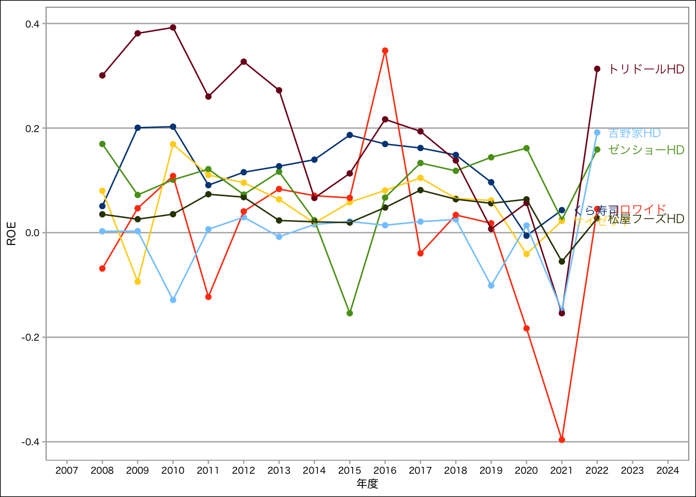
グラフのために何行コードを書くんだと思われるかもしれませんが、これも関数としておけば、2回目からは1行でグラフを作成できます。 またデータを更新するだけで、グラフが自動的に更新されるようになります。 また、グラフのスタイルを変更したいときも、mystyle2というリストを変更するだけで、すべてのグラフのスタイルが変更されます。 グラフをどのように作成したのかは、ソースコードを見れば分かるため、再現可能性も確保できます。 これがプログラミング言語をデータ分析で利用するメリットです。
おしまい。